11 Επικοινωνία
11.1 Εισαγωγή
Στο Κεφάλαιο 10, μάθατε πώς να χρησιμοποιείτε διαγράμματα ως εργαλεία για την εξερεύνηση των δεδομένων σας. Όταν κάνετε διερευνητικά διαγράμματα, γνωρίζετε —ακόμα χωρίς να κοιτάξετε — ποιες μεταβλητές θα παρουσιάζονται στο διάγραμμα. Δημιουργήσατε κάθε διάγραμμα με συγκεκριμένο σκοπό και μπορείτε να του ρίξετε μία γρήγορη ματιά και να προχωρήσετε στο επόμενο. Κατά τη διάρκεια των περισσότερων αναλύσεων, θα δημιουργήσετε δεκάδες ή εκατοντάδες διαγράμματα, τα περισσότερα από τα οποία καταλήγουν να απορριφθούν αμέσως.
Τώρα που καταλαβαίνετε τα δεδομένα σας, πρέπει να επικοινωνήσετε αυτή την κατανόησή σας σε άλλους. Το κοινό σας πιθανότατα δεν θα έχει τις γνώσεις με εσάς και δεν θα δείξει το ίδιο βαθύ ενδιαφέρον στα δεδομένα μας. Για να βοηθήσετε τους άλλους να δημιουργήσουν γρήγορα ένα καλό νοητικό μοντέλο των δεδομένων, θα χρειαστεί να καταβάλετε σημαντική προσπάθεια για να κάνετε τα διαγράμματα σας όσο το δυνατόν πιο αυτονόητα. Σε αυτό το κεφάλαιο, θα μάθετε μερικά από τα εργαλεία που παρέχει το πακέτο ggplot2 για να το πετύχετε αυτό.
Αυτό το κεφάλαιο εστιάζει στα εργαλεία που χρειάζεστε για να δημιουργήσετε καλά γραφικά. Υποθέτουμε ότι ξέρετε τι θέλετε και απλά πρέπει να μάθετε πώς να το κάνετε. Για αυτόν τον λόγο, συνιστούμε ανεπιφύλακτα να συνδυάσετε αυτό το κεφάλαιο με ένα καλό βιβλίο γενικής απεικόνισης. Μας αρέσει ιδιαίτερα το The Truthful Art, του Albert Cairo. Δεν διδάσκει τους μηχανισμούς της δημιουργίας οπτικοποιήσεων, αλλά εστιάζει σε αυτό που πρέπει να σκεφτείτε για να δημιουργήσετε αποτελεσματικά γραφικά.
11.1.1 Προαπαιτούμενα
Σε αυτό το κεφάλαιο, θα επικεντρωθούμε για άλλη μία φορά στο πακέτο ggplot2. Θα χρησιμοποιήσουμε επίσης λίγο και το πακέτο dplyr για το χειρισμό των δεδομένων, το πακέτο scales για να παρακάμψουμε τα προεπιλεγμένα διαστήματα, τις ετικέτες, τους μετασχηματισμούς και τις παλέτες, καθώς και μερικά πακέτα επέκτασης των δυνατοτήτων της ggplot2, συμπεριλαμβανομένου των ggrepel (https://ggrepel. slowkow.com) από τον Kamil Slowikowski και patchwork (https://patchwork.data-imaginist.com) του Thomas Lin Pedersen. Μην ξεχνάτε ότι θα χρειαστεί να εγκαταστήσετε αυτά τα πακέτα με την εντολή ‘install.packages()’ αν δεν τα έχετε ήδη.
11.2 Ετικέτες (labels)
Το πιο εύκολο μέρος για να ξεκινήσετε όταν μετατρέπετε ένα διερευνητικό διάγραμμα σε ένα επεξηγητικό γραφικό είναι με τις καλές ετικέτες. Μπορείτε να να προσθέσετε ετικέτες σε ένα διάγραμμα με τη συνάρτηση labs().
ggplot(mpg, aes(x = displ, y = hwy)) +
geom_point(aes(color = class)) +
geom_smooth(se = FALSE) +
labs(
x = "Engine displacement (L)",
y = "Highway fuel economy (mpg)",
color = "Car type",
title = "Fuel efficiency generally decreases with engine size",
subtitle = "Two seaters (sports cars) are an exception because of their light weight",
caption = "Data from fueleconomy.gov"
)![Διάγραμμα διασποράς της απόδοσης καυσίμου σε αυτοκινητόδρομο σε σχέση με το μέγεθος του κινητήρα των αυτοκινήτων, όπου τα σημεία είναι χρωματισμένα ανάλογα με την κατηγορία του αυτοκινήτου. Επικαλύπτεται μια ομαλοποιημένη καμπύλη που ακολουθεί την τροχιά της σχέσης μεταξύ της απόδοσης καυσίμου σε αυτοκινητόδρομο, έναντι του μεγέθους του κινητήρα των αυτοκινήτων. Ο άξονας x φέρει την ένδειξη "Engine displacement (L)" και ο άξονας y φέρει την ένδειξη "Highway fuel economy (mpg)". Το υπόμνημα φέρει την ετικέτα "Car type". Το διάγραμμα έχει τίτλο "Fuel efficiency generally decreases with engine size". Ο υπότιτλος είναι "Two seaters (sports cars) are an exception because of their light weight" και η λεζάντα είναι "Data from fueleconomy.gov".](communication_files/figure-html/unnamed-chunk-3-1.png)
Ο σκοπός ενός τίτλου σε ένα διάγραμμα είναι να συνοψίσει το κύριο εύρημα. Αποφύγετε τίτλους που απλώς περιγράφουν τι είναι το διάγραμμα, π.χ., “Ένα διάγραμμα διασποράς του κυβισμού κινητήρα έναντι της οικονομίας καυσίμου”.
Εάν χρειάζεται να προσθέσετε περισσότερο κείμενο, υπάρχουν δύο άλλες χρήσιμες ετικέτες: ο υπότιτλος (subtitle) προσθέτει επιπλέον λεπτομέρειες με μικρότερη γραμματοσειρά κάτω από τον τίτλο και η λεζάντα (caption) που προσθέτει κείμενο στην κάτω δεξιά γωνία του διαγράμματος, και χρησιμοποιείται συχνά για να περιγράψει την πηγή των δεδομένων. Μπορείτε επίσης να χρησιμοποιήσετε το labs() για να αντικαταστήσετε τους τίτλους των αξόνων και των υπομνημάτων. Συνήθως είναι καλή ιδέα να αντικαταστήσετε σύντομα ονόματα μεταβλητών με πιο λεπτομερείς περιγραφές και να συμπεριλάβετε τις μονάδες.
Είναι δυνατό να χρησιμοποιηθούν μαθηματικές εξισώσεις αντί για συμβολοσειρές κειμένου. Απλώς απενεργοποιήστε το "" στην quote() και διαβάστε για τις διαθέσιμες επιλογές στο ?plotmath:
df <- tibble(
x = 1:10,
y = cumsum(x^2)
)
ggplot(df, aes(x, y)) +
geom_point() +
labs(
x = quote(x[i]),
y = quote(sum(x[i] ^ 2, i == 1, n))
)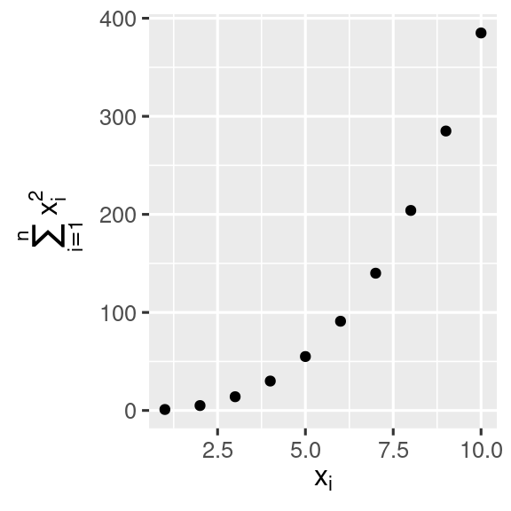
11.2.1 Ασκήσεις
Δημιουργήστε ένα διάγραμμα με τα δεδομένα οικονομίας καυσίμου με προσαρμοσμένες τις ετικέτες
title,subtitle,caption,x,y, καιcolor.-
Δημιουργήστε ξανά το παρακάτω διάγραμμα χρησιμοποιώντας τα δεδομένα οικονομίας καυσίμου. Σημειώστε ότι τόσο τα χρώματα όσο και τα σχήματα των σημείων διαφέρουν ανάλογα με τον τύπο του συστήματος μετάδοσης κίνησης.
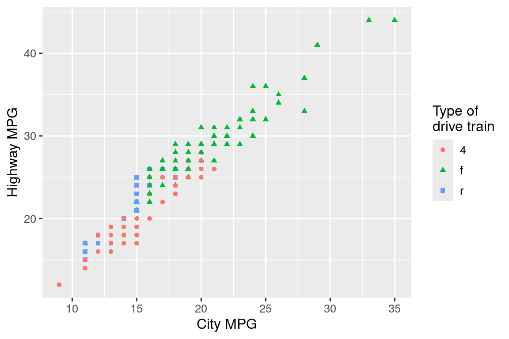
Ξεκινήστε με ένα διερευνητικό διάγραμμα που δημιουργήσατε τον τελευταίο μήνα και προσθέστε ενημερωτικούς τίτλους για να το καταλάβουν πιο εύκολα οι άλλοι.
11.3 Επισημάνσεις
Εκτός από την επισήμανση βασικών στοιχείων του διαγράμματος σας, είναι συχνά χρήσιμο να επισημαίνετε μεμονωμένες παρατηρήσεις ή ομάδες παρατηρήσεων. Το πρώτο εργαλείο που έχετε στη διάθεσή σας είναι η geom_text(). Η geom_text() είναι παρόμοια με τη geom_point(), αλλά έχει ένα επιπλέον αισθητικό στοιχείο: το label. Αυτό καθιστά δυνατή την προσθήκη ετικετών κειμένου στα διαγράμματα σας.
Υπάρχουν δύο πιθανές πηγές ετικετών. Πρώτον, μπορεί να έχετε ένα tibble που παρέχει ετικέτες. Στο παρακάτω διάγραμμα επιλέγουμε τα αυτοκίνητα με το μεγαλύτερο μέγεθος κινητήρα σε κάθε τύπο κίνησης και αποθηκεύουμε τις πληροφορίες τους σε ένα νέο πλαίσιο δεδομένων που ονομάζεται label_info.
label_info <- mpg |>
group_by(drv) |>
arrange(desc(displ)) |>
slice_head(n = 1) |>
mutate(
drive_type = case_when(
drv == "f" ~ "front-wheel drive",
drv == "r" ~ "rear-wheel drive",
drv == "4" ~ "4-wheel drive"
)
) |>
select(displ, hwy, drv, drive_type)
label_info
#> # A tibble: 3 × 4
#> # Groups: drv [3]
#> displ hwy drv drive_type
#> <dbl> <int> <chr> <chr>
#> 1 6.5 17 4 4-wheel drive
#> 2 5.3 25 f front-wheel drive
#> 3 7 24 r rear-wheel driveΣτη συνέχεια, χρησιμοποιούμε αυτό το νέο πλαίσιο δεδομένων για να επισημάνουμε απευθείας τις τρεις ομάδες, αντικαθιστώντας το υπόμνημα με ετικέτες που τοποθετούνται απευθείας στο διάγραμμα Χρησιμοποιώντας τα ορίσματα fontface και size μπορούμε να προσαρμόσουμε την εμφάνιση των ετικετών κειμένου. Αυτές είναι μεγαλύτερες από το υπόλοιπο κείμενο στο διάγραμμα και με έντονη γραφή. Το (theme(legend.position = "none") απενεργοποιεί όλα τα υπομνήματα — θα μιλήσουμε για αυτό σύντομα.)
ggplot(mpg, aes(x = displ, y = hwy, color = drv)) +
geom_point(alpha = 0.3) +
geom_smooth(se = FALSE) +
geom_text(
data = label_info,
aes(x = displ, y = hwy, label = drive_type),
fontface = "bold", size = 5, hjust = "right", vjust = "bottom"
) +
theme(legend.position = "none")
#> `geom_smooth()` using method = 'loess' and formula = 'y ~ x'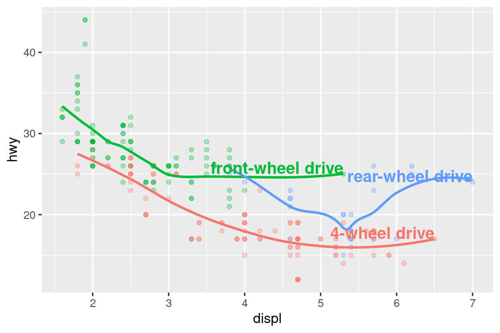
Σημειώστε τη χρήση των hjust (οριζόντια στοίχιση, horizontal justification) και vjust (κάθετη στοίχιση, vertical justification) για τον έλεγχο της ευθυγράμμισης της ετικέτας.
Ωστόσο, το επισημασμένο διάγραμμα που δημιουργήσαμε παραπάνω είναι δύσκολο να διαβαστεί καθώς οι ετικέτες επικαλύπτονται μεταξύ τους και με τα σημεία. Μπορούμε να χρησιμοποιήσουμε τη συνάρτηση geom_label_repel() από το πακέτο ggrepel για να αντιμετωπίσουμε και τα δύο αυτά ζητήματα. Αυτό το χρήσιμο πακέτο θα προσαρμόσει αυτόματα τις ετικέτες έτσι ώστε να μην αλληλεπικαλύπτονται:
ggplot(mpg, aes(x = displ, y = hwy, color = drv)) +
geom_point(alpha = 0.3) +
geom_smooth(se = FALSE) +
geom_label_repel(
data = label_info,
aes(x = displ, y = hwy, label = drive_type),
fontface = "bold", size = 5, nudge_y = 2
) +
theme(legend.position = "none")
#> `geom_smooth()` using method = 'loess' and formula = 'y ~ x'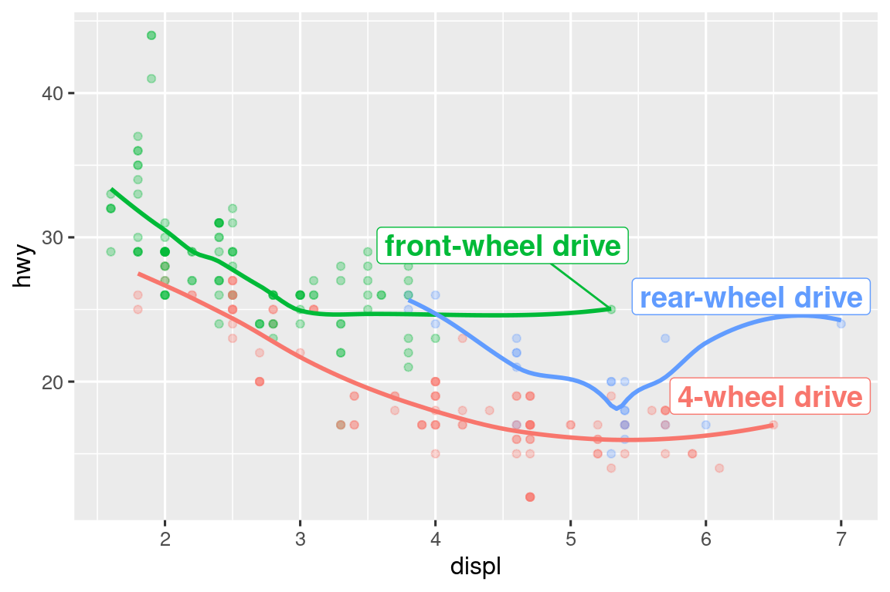
Μπορείτε επίσης να ακολουθήσετε την ίδια ιδέα για να επισημάνετε ορισμένα σημεία σε μία γραφική παράσταση με τη geom_text_repel() από το πακέτο ggrepel. Σημειώστε μία άλλη εύχρηστη τεχνική που χρησιμοποιείται εδώ: προσθέσαμε ένα δεύτερο στρώμα μεγάλων, κοίλων σημείων για να τονίσουμε περαιτέρω τα σημεία που φέρουν ετικέτα.
potential_outliers <- mpg |>
filter(hwy > 40 | (hwy > 20 & displ > 5))
ggplot(mpg, aes(x = displ, y = hwy)) +
geom_point() +
geom_text_repel(data = potential_outliers, aes(label = model)) +
geom_point(data = potential_outliers, color = "red") +
geom_point(
data = potential_outliers,
color = "red", size = 3, shape = "circle open"
)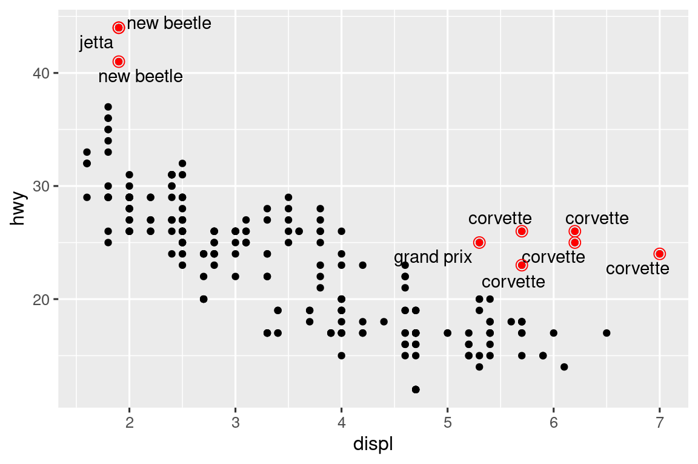
Θυμηθείτε, εκτός από τη geom_text() και τη geom_label(), έχετε πολλά άλλα γεωμετρικά στοιχεία διαθέσιμα στο πακέτο ggplot2 για να βοηθήσετε στην επισήμανση του διαγράμματος σας. Μερικές ιδέες:
Χρησιμοποιήστε τις
geom_hline()καιgeom_vline()για να προσθέσετε γραμμές αναφοράς. Συχνά χρησιμοποιούμε πιο παχιές γραμμές (linewidth = 2) και λευκές (color = white) και τις σχεδιάζουμε κάτω από το κύριο επίπεδο δεδομένων. Αυτό τις καθιστά εύκολα ορατές, χωρίς να αποσπά την προσοχή από τα δεδομένα.Χρησιμοποιήστε τη
geom_rect()για να σχεδιάσετε ένα ορθογώνιο γύρω από σημεία που σας ενδιαφέρουν. Τα όρια του ορθογωνίου ορίζονται από τα αισθητικά στοιχείαxmin,xmax,ymin,ymax. Εναλλακτικά, ανατρέξτε στο πακέτο ggforce, και συγκεκριμένα στοgeom_mark_hull(), το οποίο σας επιτρέπει να σχολιάζετε υποσύνολα σημείων με τη βοήθεια περιγραμμάτων.Χρησιμοποιήστε την
geom_segment()με το όρισμαarrowγια να επιστήσετε την προσοχή σε ένα σημείο, υποδεικνύοντας το με ένα βέλος. Χρησιμοποιήστε τα αισθητικά στοιχείαxκαιyγια να ορίσετε την αρχική θέση και ταxendκαιyendγια να ορίσετε την τελική θέση.
Μία άλλη εύχρηστη συνάρτηση για την προσθήκη σχολιασμών σε διαγράμματα είναι η annotate(). Ως εμπειρικό κανόνα, τα γεωμετρικά στοιχεία είναι γενικά χρήσιμα για την επισήμανση ενός υποσυνόλου δεδομένων ενώ η annotate() είναι χρήσιμη για την προσθήκη ενός ή μικρού αριθμού στοιχείων σχολιασμού σε ένα γράφημα.
Για να δείξουμε τη χρήση της annotate(), ας δημιουργήσουμε ένα κείμενο για να προσθέσουμε στο διάγραμμα μας. Το κείμενο είναι λίγο μεγάλο, επομένως θα χρησιμοποιήσουμε την stringr::str_wrap() για να προσθέσουμε αυτόματα αλλαγές γραμμής, δεδομένου του αριθμού των χαρακτήρων που θέλετε ανά γραμμή:
trend_text <- "Larger engine sizes tend to have lower fuel economy." |>
str_wrap(width = 30)
trend_text
#> [1] "Larger engine sizes tend to\nhave lower fuel economy."Στη συνέχεια, προσθέτουμε δύο επίπεδα επισήμανσης: το ένα με γεωμετρικό στοιχείο ετικέτας και το άλλο με γεωμετρικό ευθύγραμμου τμήματος (segment). Τα αισθητικά στοιχεία x και y και στα δύο αυτά γεωμετρικά στοιχεία ορίζουν από πού πρέπει να ξεκινά η επισήμανση και τα αισθητικά xend και yend στην περίπτωση του γεωμετρικού στοιχείου ευθύγραμμου τμήματος ορίζουν την τελική θέση του τμήματος. Σημειώστε επίσης ότι το ευθύγραμμο τμήμα έχει τη μορφή βέλους.
ggplot(mpg, aes(x = displ, y = hwy)) +
geom_point() +
annotate(
geom = "label", x = 3.5, y = 38,
label = trend_text,
hjust = "left", color = "red"
) +
annotate(
geom = "segment",
x = 3, y = 35, xend = 5, yend = 25, color = "red",
arrow = arrow(type = "closed")
)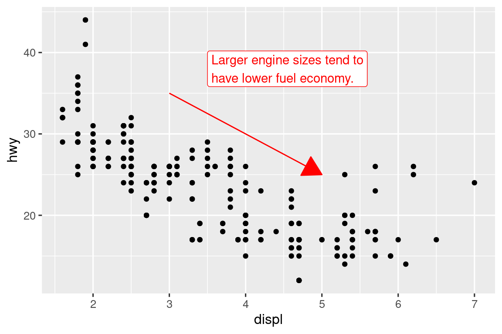
Η επισήμανση είναι ένα ισχυρό εργαλείο για την επικοινωνία των κύριων σημείων και των χαρακτηριστικών ενδιαφέροντος των οπτικοποιήσεων σας. Ο μόνος περιορισμός είναι η φαντασία σας (και η υπομονή σας με την τοποθέτηση επισημάνσεων ώστε να είναι αισθητικά ευχάριστες)!
11.3.1 Ασκήσεις
Χρησιμοποιήστε την
geom_text()με άπειρες θέσεις για να τοποθετήσετε κείμενο στις τέσσερις γωνίες της γραφικής παράστασης.Χρησιμοποιήστε την
annotate()για να προσθέσετε ένα γεωμετρικό στοιχείο στη μέση του τελευταίου διαγράμματος, χωρίς να χρειάζεται να δημιουργήσετε ένα tibble. Προσαρμόστε το σχήμα, το μέγεθος ή το χρώμα του σημείου.Πώς αλληλεπιδρούν οι ετικέτες με τη
geom_text()με τη δημιουργία όψεων (faceting); Πώς μπορείτε να προσθέσετε μία ετικέτα σε μία μεμονωμένη όψη; Πώς μπορείτε να βάλετε διαφορετική ετικέτα σε κάθε όψη; (Συμβουλή: Σκεφτείτε το σύνολο δεδομένων που μεταβιβάζεται στηgeom_text().)Ποια ορίσματα της
geom_label()ελέγχουν την εμφάνιση του πλαισίου φόντου;Ποια είναι τα τέσσερα ορίσματα της
arrow(); Πώς λειτουργούν; Δημιουργήστε μία σειρά από διαγράμματα που δείχνουν τις πιο σημαντικές επιλογές.
11.4 Κλίμακες
Ο τρίτος τρόπος με τον οποίο μπορείτε να κάνετε το διάγραμμα σας καλύτερο για επικοινωνία είναι να προσαρμόσετε τις κλίμακες. Οι κλίμακες ελέγχουν πώς εμφανίζονται οπτικά οι αισθητικές αντιστοιχίσεις.
11.4.1 Προεπιλεγμένες κλίμακες
Φυσιολογικά, το πακέτο ggplot2 προσθέτει αυτόματα κλίμακες για εσάς. Για παράδειγμα, όταν πληκτρολογείτε:
ggplot(mpg, aes(x = displ, y = hwy)) +
geom_point(aes(color = class))Η ggplot2 προσθέτει αυτόματα προεπιλεγμένες κλίμακες στο παρασκήνιο:
ggplot(mpg, aes(x = displ, y = hwy)) +
geom_point(aes(color = class)) +
scale_x_continuous() +
scale_y_continuous() +
scale_color_discrete()Παρατηρήστε το σύστημα ονομασίας για τις κλίμακες: scale_ ακολουθούμενο από το όνομα του αισθητικού στοιχείου, μετά _, και μετά το όνομα της κλίμακας. Οι προεπιλεγμένες κλίμακες ονομάζονται ανάλογα με τον τύπο της μεταβλητής με την οποία αντιστοιχίζονται: συνεχής, διακριτή, ημερομηνία και ώρας ή ημερομηνία. Η scale_x_continuous() βάζει τις αριθμητικές τιμές από το displ σε μία συνεχή αριθμητική γραμμή στον άξονα x, η scale_color_discrete() επιλέγει χρώματα για κάθε μία από τις κατηγορίες (class) του car κ.λπ. Υπάρχουν πολλές μη προεπιλεγμένες κλίμακες για τις οποίες θα μάθετε παρακάτω.
Οι προεπιλεγμένες κλίμακες έχουν επιλεγεί προσεκτικά για να κάνουν καλή δουλειά για ένα ευρύ φάσμα εισόδων. Ωστόσο, μπορεί να θέλετε να παρακάμψετε τις προεπιλογές για δύο λόγους:
Ίσως θέλετε να τροποποιήσετε ορισμένες από τις παραμέτρους της προεπιλεγμένης κλίμακας. Αυτό σας επιτρέπει να κάνετε πράγματα όπως να αλλάξετε τα διαστήματα στους άξονες ή τις ετικέτες στο υπόμνημα.
Ίσως θέλετε να αντικαταστήσετε εντελώς την κλίμακα και να χρησιμοποιήσετε έναν εντελώς διαφορετικό αλγόριθμο. Συχνά μπορείτε να πετύχετε καλύτερο αποτέλεσμα από την προεπιλογή, επειδή γνωρίζετε περισσότερα για τα δεδομένα.
11.4.2 Διαχωριστικά σημεία αξόνων και ετικέτες υπομνημάτων
Συνολικά, οι άξονες και τα υπομνήματα είναι γνωστά ως οδηγοί (guides). Οι άξονες χρησιμοποιούνται για τα αισθητικά στοιχεία x και y, ενώ τα υπομνήματα χρησιμοποιούνται για οτιδήποτε άλλο.
Υπάρχουν δύο κύρια ορίσματα που επηρεάζουν την εμφάνιση των διαχωριστικών σημείων στους άξονες και τις ετικέτες στο υπόμνημα: breaks και labels αντίστοιχα. Το breaks ελέγχει τη θέση των διαχωριστικών ή τις τιμές που σχετίζονται με τις ετικέτες/κλειδιά. Το labels ελέγχει την ετικέτα κειμένου που σχετίζεται με κάθε διαχωριστικό/κλειδί. Η πιο κοινή χρήση του breaks είναι η παράκαμψη της προκαθορισμένης επιλογής:
ggplot(mpg, aes(x = displ, y = hwy, color = drv)) +
geom_point() +
scale_y_continuous(breaks = seq(15, 40, by = 5)) 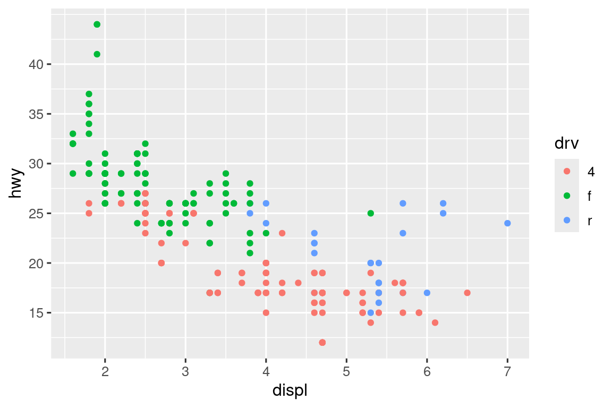
Μπορείτε να χρησιμοποιήσετε το labels με τον ίδιο τρόπο (ένα διάνυσμα χαρακτήρων ίδιου μήκους με το breaks), αλλά μπορείτε επίσης να το ορίσετε ως NULL για να καταργήσετε τις ετικέτες εντελώς. Αυτό μπορεί να είναι χρήσιμο για χάρτες ή για δημοσίευση διαγραμμάτων όπου δεν μπορείτε να μοιραστείτε τους απόλυτους αριθμούς. Μπορείτε επίσης να χρησιμοποιήσετε τα breaks και labels για να ελέγξετε την εμφάνιση των υπομνημάτων. Για διακριτές κλίμακες κατηγορικών μεταβλητών, το labels μπορεί να είναι μία λίστα της οποίας τα στοιχεία έχουν ονόματα και η οποία περιέχει τα υπάρχοντα ονόματα κλάσεων και τις επιθυμητές ετικέτες για αυτά.
ggplot(mpg, aes(x = displ, y = hwy, color = drv)) +
geom_point() +
scale_x_continuous(labels = NULL) +
scale_y_continuous(labels = NULL) +
scale_color_discrete(labels = c("4" = "4-wheel", "f" = "front", "r" = "rear"))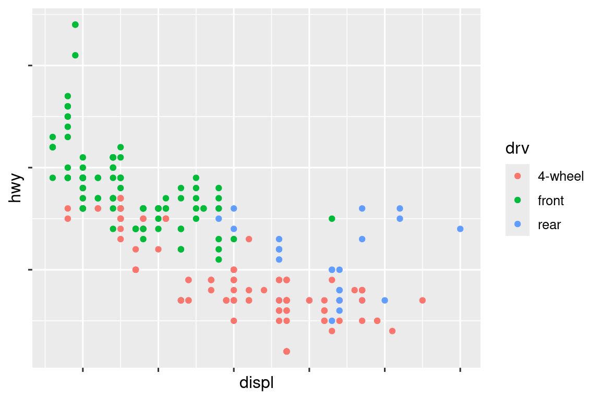
Το όρισμα labels σε συνδυασμό με συναρτήσεις επισήμανσης από το πακέτο scales είναι επίσης χρήσιμο για τη μορφοποίηση αριθμών ως συνάλλαγμα, ποσοστό κ.λπ. Το διάγραμμα στα αριστερά δείχνει την προεπιλεγμένη επισήμανση με την label_dollar(), η οποία προσθέτει το σύμβολο του δολαρίου καθώς και ένα διαχωριστικό κόμμα για να υποδηλώσει τις χιλιάδες. Η γραφική παράσταση στα δεξιά προσθέτει ένα επιπλέον επίπεδο παραμετροποίησης διαιρώντας τις τιμές σε δολάρια με 1.000 και προσθέτοντας ένα επίθημα “K” (για “χιλιάδες”) καθώς και προσθέτοντας προσαρμοσμένα διαχωριστικά σημεία. Σημειώστε ότι τα breaks ακολουθούν την αρχική κλίμακα των δεδομένων.
# Αριστερά
ggplot(diamonds, aes(x = price, y = cut)) +
geom_boxplot(alpha = 0.05) +
scale_x_continuous(labels = label_dollar())
# Δεξιά
ggplot(diamonds, aes(x = price, y = cut)) +
geom_boxplot(alpha = 0.05) +
scale_x_continuous(
labels = label_dollar(scale = 1/1000, suffix = "K"),
breaks = seq(1000, 19000, by = 6000)
)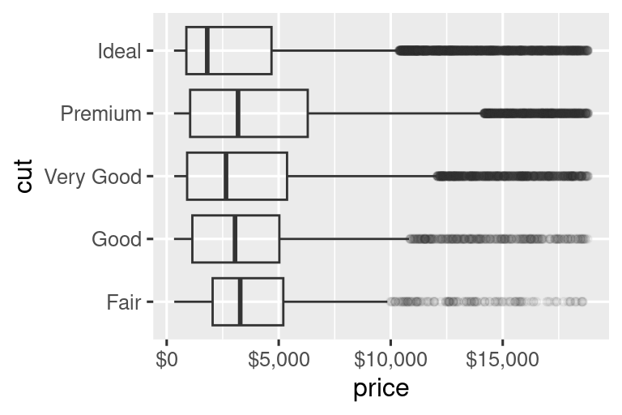
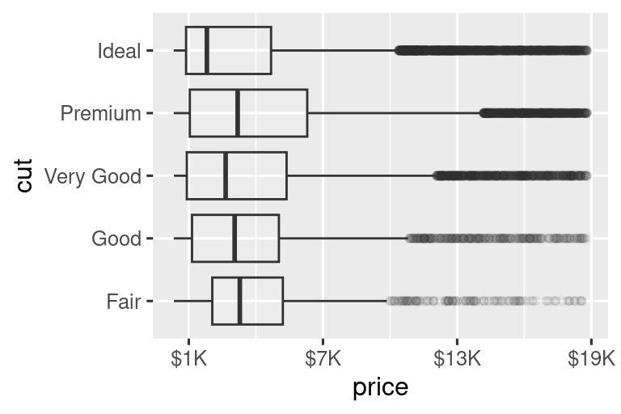
Ακόμη μία χρήσιμη συνάρτηση είναι η label_percent():
ggplot(diamonds, aes(x = cut, fill = clarity)) +
geom_bar(position = "fill") +
scale_y_continuous(name = "Percentage", labels = label_percent())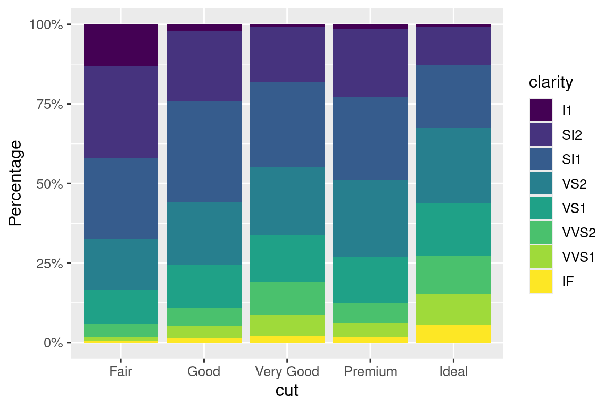
Μία άλλη χρήση του breaks είναι όταν έχετε σχετικά λίγα σημεία δεδομένων και θέλετε να επισημάνετε ακριβώς πού εντοπίζονται οι παρατηρήσεις. Για παράδειγμα, πάρτε αυτό το διάγραμμα που δείχνει πότε κάθε πρόεδρος των ΗΠΑ ξεκίνησε και ολοκλήρωσε τη θητεία του.
presidential |>
mutate(id = 33 + row_number()) |>
ggplot(aes(x = start, y = id)) +
geom_point() +
geom_segment(aes(xend = end, yend = id)) +
scale_x_date(name = NULL, breaks = presidential$start, date_labels = "'%y")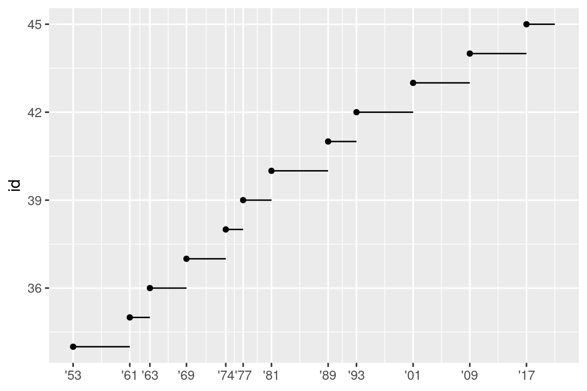
Σημειώστε ότι για το όρισμα breaks έχουμε εξάγει τη μεταβλητή start ως διάνυσμα, επιλέγοντας την ως presidential$start, επειδή δεν μπορούμε να κάνουμε αισθητική αντιστοίχιση για αυτό το όρισμα. Σημειώστε επίσης ότι η επιλογή των διαχωριστικών και των ετικετών για τις κλίμακες ημερομηνίας και ώρας είναι λίγο διαφορετική:
Το
date_labelsδέχεται μία συγκεκριμένη δομή μορφοποίησης, ίδια με τη συνάρτησηparse_datetime().Το
date_breaks(δεν εμφανίζεται εδώ), παίρνει μία συμβολοσειρά όπως για παράδειγμα “2 days” ή “1 month”.
11.4.3 Διάταξη υπομνήματος
Συνήθως θα χρησιμοποιείτε τα breaks και labels για να τροποποιήσετε τους άξονες. Ενώ και οι δύο λειτουργούν και για υπομνήματα, υπάρχουν μερικές άλλες τεχνικές που είναι πιο πιθανό να χρησιμοποιήσετε.
Για να ελέγξετε τη συνολική θέση του υπομνήματος, πρέπει να το ορίσετε μέσω του theme(). Θα επανέλθουμε στα θέματα στο τέλος του κεφαλαίου, αλλά εν συντομία, αυτά ελέγχουν τα μέρη του διαγράμματος που δεν έχουν να κάνουν με τα δεδομένα. Η επιλογή legend.position ελέγχει πού θα σχεδιαστεί το υπόμνημα:
base <- ggplot(mpg, aes(x = displ, y = hwy)) +
geom_point(aes(color = class))
base + theme(legend.position = "right") # the default
base + theme(legend.position = "left")
base +
theme(legend.position = "top") +
guides(color = guide_legend(nrow = 3))
base +
theme(legend.position = "bottom") +
guides(color = guide_legend(nrow = 3))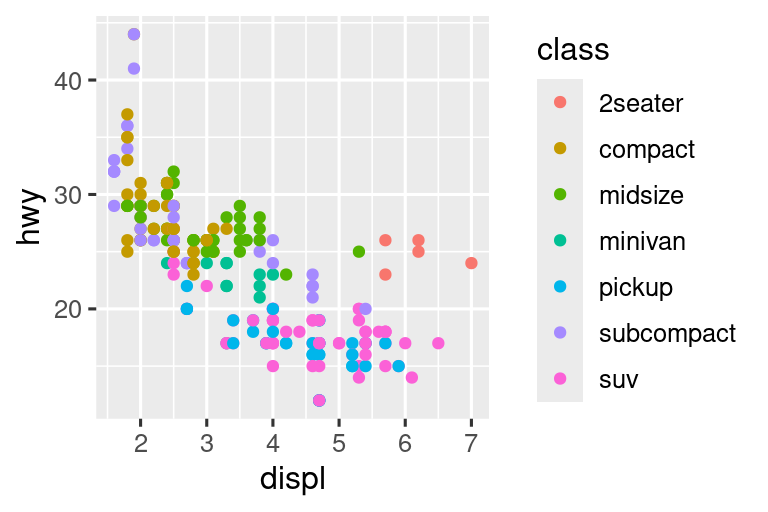
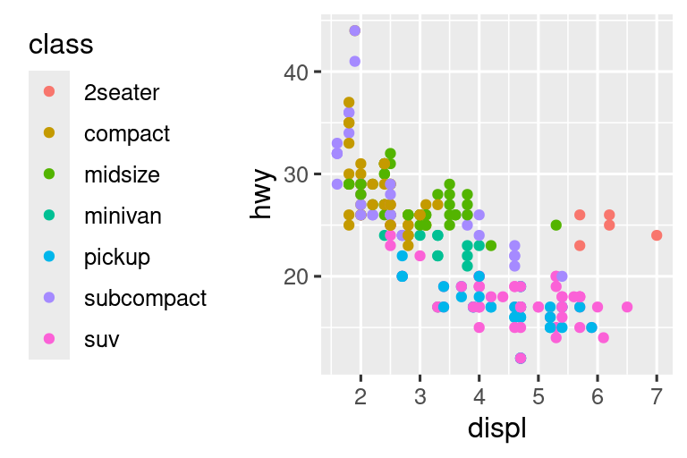
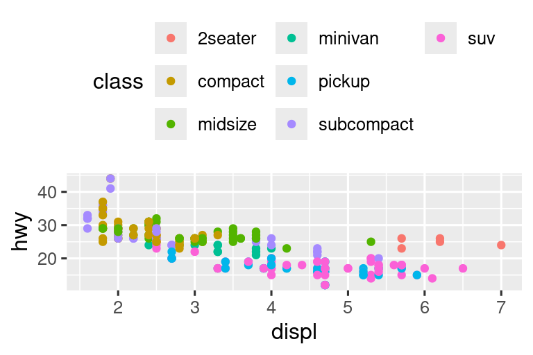
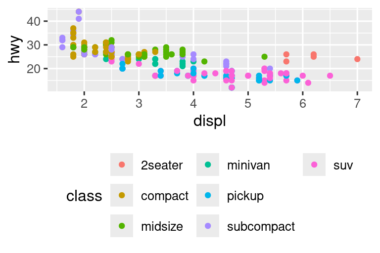
Εάν το διάγραμμα σας είναι κοντό και πλατύ, τοποθετήστε το υπόμνημα στην κορυφή ή στο κάτω μέρος και αν είναι ψηλό και στενό, τοποθετήστε το υπόμνημα αριστερά ή δεξιά. Μπορείτε επίσης να χρησιμοποιήσετε την επιλογή legend.position = "none" για να καταστείλετε εντελώς την εμφάνιση του υπομνήματος.
Για να ελέγξετε την εμφάνιση μεμονωμένων υπομνημάτων, χρησιμοποιήστε την guides() μαζί με τη guide_legend() ή τη guide_colorbar(). Το ακόλουθο παράδειγμα δείχνει δύο σημαντικές ρυθμίσεις: τον έλεγχο του αριθμού των γραμμών που χρησιμοποιεί το υπόμνημα με το όρισμα “nrow” και την παράκαμψη ενός από τα αισθητικά στοιχεία για να μεγαλώσουν τα σημεία. Αυτό είναι ιδιαίτερα χρήσιμο εάν έχετε χρησιμοποιήσει χαμηλή τιμή alpha για να παρουσιάσετε πολλά σημεία σε μία γραφική παράσταση.
ggplot(mpg, aes(x = displ, y = hwy)) +
geom_point(aes(color = class)) +
geom_smooth(se = FALSE) +
theme(legend.position = "bottom") +
guides(color = guide_legend(nrow = 2, override.aes = list(size = 4)))
#> `geom_smooth()` using method = 'loess' and formula = 'y ~ x'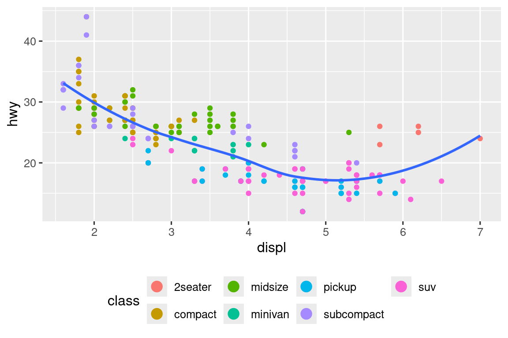
Παρατηρήστε ότι το όνομα του ορίσματος στη guides() ταιριάζει με το όνομα του αισθητικού στοιχείου, ακριβώς όπως και στη labs().
11.4.4 Αντικαθιστώντας μία κλίμακα
Αντί για να τροποποιήσετε λίγο τις λεπτομέρειες, μπορείτε να αντικαταστήσετε εντελώς την κλίμακα. Υπάρχουν δύο τύποι κλιμάκων που είναι πιο πιθανό να θέλετε να αλλάξετε: κλίμακες συνεχούς θέσης και κλίμακες χρώματος. Ευτυχώς, οι ίδιες αρχές ισχύουν για όλες τις υπόλοιπες αισθητικές, επομένως, αφού κατανοήσετε τη θέση και το χρώμα, θα μπορείτε να κατανοήσετε γρήγορα και άλλες αντικαταστάσεις κλιμάκων.
Είναι πολύ χρήσιμο να απεικονίζετε μετασχηματισμούς της μεταβλητής σας. Για παράδειγμα, είναι ευκολότερο να δούμε την ακριβή σχέση μεταξύ των μεταβλητών carat και price αν τις μετασχηματίσουμε λογαριθμώντας τες:
# Αριστερά
ggplot(diamonds, aes(x = carat, y = price)) +
geom_bin2d()
# Δεξιά
ggplot(diamonds, aes(x = log10(carat), y = log10(price))) +
geom_bin2d()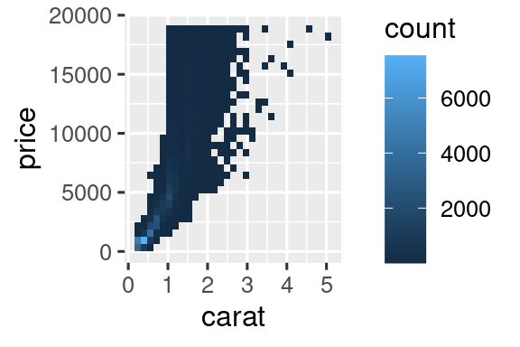
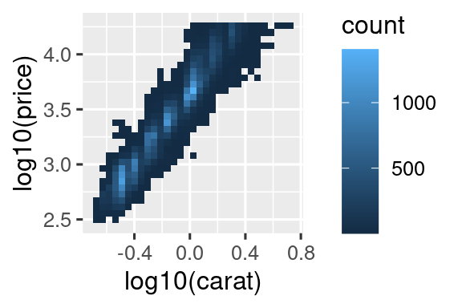
Ωστόσο, το μειονέκτημα αυτού του μετασχηματισμού είναι ότι οι άξονες επισημαίνονται τώρα με τις μετασχηματισμένες τιμές, καθιστώντας δύσκολη την ερμηνεία του διαγράμματος. Αντί να κάνουμε τον μετασχηματισμό στην αισθητική χαρτογράφηση, μπορούμε να το κάνουμε με την κλίμακα. Αυτό είναι οπτικά πανομοιότυπο, εκτός από το ότι οι άξονες επισημαίνονται στην αρχική κλίμακα δεδομένων.
ggplot(diamonds, aes(x = carat, y = price)) +
geom_bin2d() +
scale_x_log10() +
scale_y_log10()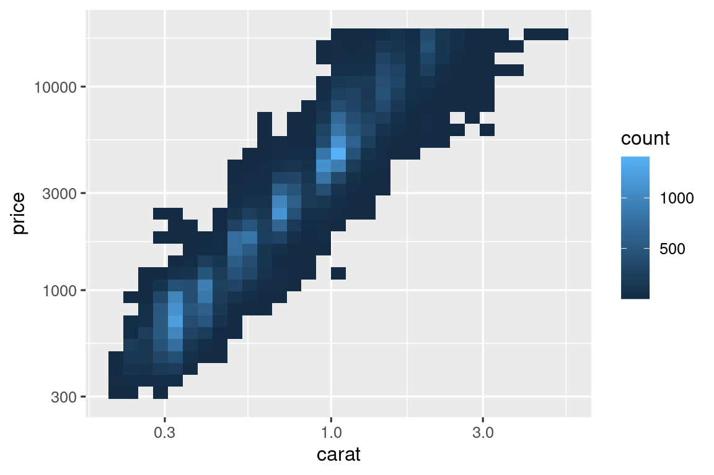
Μία άλλη κλίμακα την οποία προσαρμόζουμε συχνά είναι το χρώμα. Η προεπιλεγμένη κατηγορική κλίμακα επιλέγει χρώματα που είναι ομοιόμορφα τοποθετημένα γύρω από τον τροχό χρωμάτων. Χρήσιμες εναλλακτικές είναι οι κλίμακες ColorBrewer που έχουν επιλεγεί για να λειτουργούν καλύτερα για άτομα με συνήθεις τύπους αχρωματοψίας. Τα δύο παρακάτω διαγράμματα μοιάζουν, αλλά υπάρχει μεγάλη διαφορά στις αποχρώσεις του κόκκινου και του πράσινου, έτσι ώστε οι κουκκίδες στα δεξιά να διακρίνονται ακόμα και από άτομα με αχρωματοψία στο κόκκινο και το πράσινο1.
ggplot(mpg, aes(x = displ, y = hwy)) +
geom_point(aes(color = drv))
ggplot(mpg, aes(x = displ, y = hwy)) +
geom_point(aes(color = drv)) +
scale_color_brewer(palette = "Set1")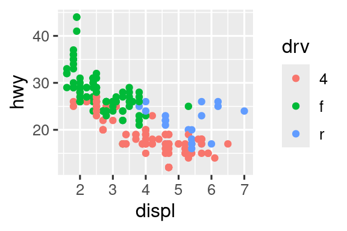
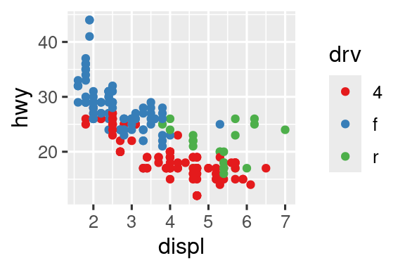
Μην ξεχνάτε απλούστερες τεχνικές για τη βελτίωση του πόσο προσβάσιμα είναι τα διαγράμματα σας. Εάν υπάρχουν μόνο λίγα χρώματα, μπορείτε να προσθέσετε μία πλεονάζουσα αντιστοίχιση σχήματος. Αυτό θα βοηθήσει επίσης να διασφαλίσετε ότι το διάγραμμα σας είναι ερμηνεύσιμο σε μαύρο και άσπρο.
ggplot(mpg, aes(x = displ, y = hwy)) +
geom_point(aes(color = drv, shape = drv)) +
scale_color_brewer(palette = "Set1")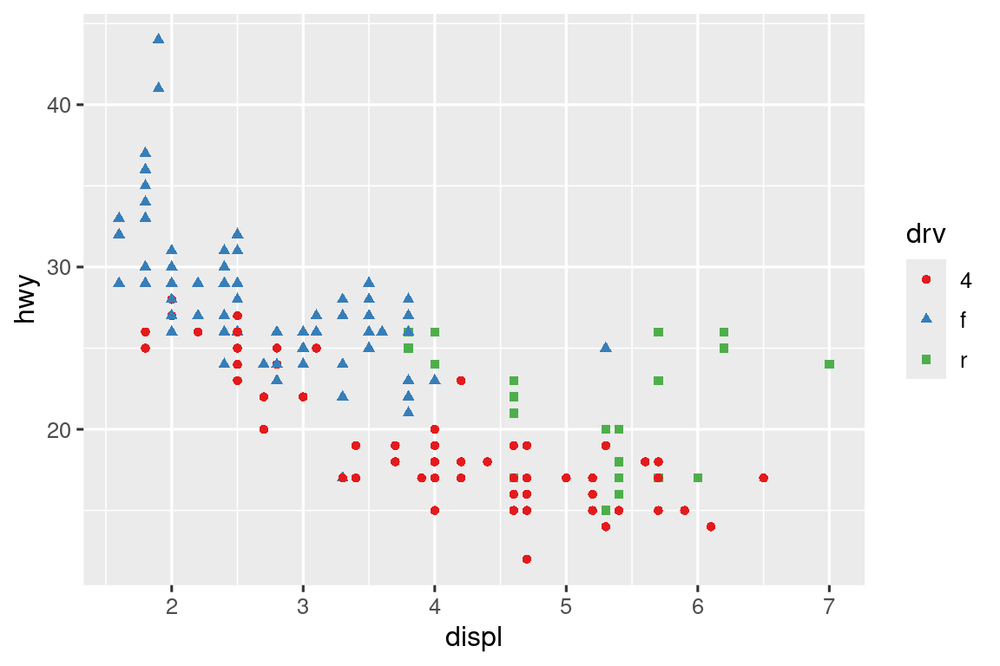
Οι κλίμακες ColorBrewer καταγράφονται αναλυτικά στη διαδικτυακή διεύθυνση https://colorbrewer2.org/ και διατίθενται στην R μέσω του πακέτου RColorBrewer, από τον Erich Neuwirth. Το Σχήμα 11.1 εμφανίζει την πλήρη λίστα όλων των παλετών. Η διαδοχική (επάνω) και η αποκλίνουσα (κάτω) παλέτα είναι ιδιαίτερα χρήσιμες αν οι κατηγορίες σας είναι ταξινομημένες ή έχουν μία “μεσαία” τιμή. Αυτό προκύπτει συχνά εάν έχετε χρησιμοποιήσει την cut() για να μετατρέψετε μία συνεχή μεταβλητή σε κατηγορική.
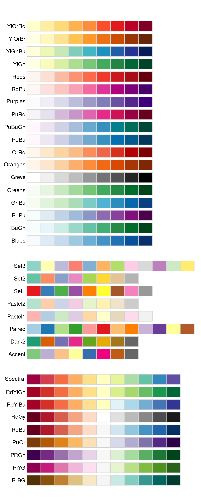
Όταν έχετε μία προκαθορισμένη αντιστοίχιση μεταξύ τιμών και χρωμάτων, χρησιμοποιήστε την scale_color_manual(). Για παράδειγμα, εάν αντιστοιχίσουμε τα πολιτικά κόμματα που διεκδικούν την προεδρία των ΗΠΑ με ένα χρώμα, θα θέλουμε να χρησιμοποιήσουμε την τυπική χαρτογράφηση του κόκκινου για τους Ρεπουμπλικάνους και του μπλε για τους Δημοκρατικούς. Μία προσέγγιση για την εκχώρηση αυτών των χρωμάτων είναι η χρήση δεκαεξαδικών (hex, hexadecimal) κωδικών χρωμάτων:
presidential |>
mutate(id = 33 + row_number()) |>
ggplot(aes(x = start, y = id, color = party)) +
geom_point() +
geom_segment(aes(xend = end, yend = id)) +
scale_color_manual(values = c(Republican = "#E81B23", Democratic = "#00AEF3"))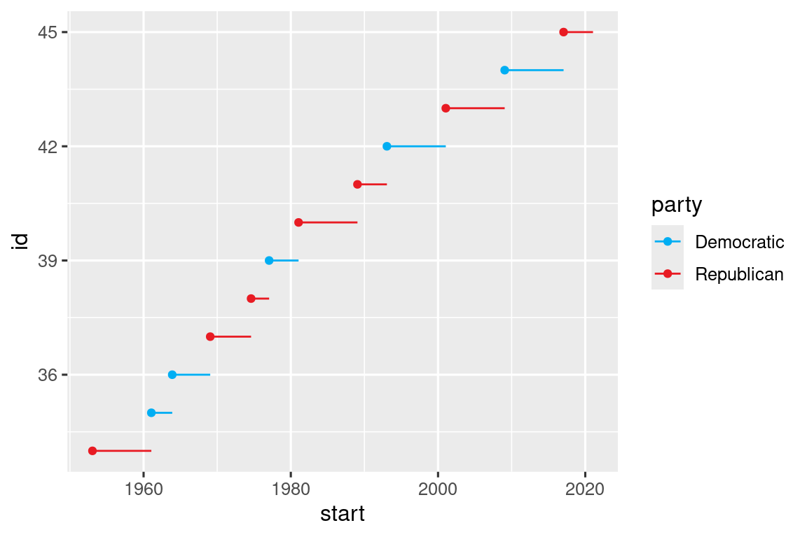
Για συνεχές χρώμα, μπορείτε να χρησιμοποιήσετε τις ενσωματωμένες συναρτήσεις scale_color_gradient() ή scale_fill_gradient(). Εάν έχετε αποκλίνουσα κλίμακα, μπορείτε να χρησιμοποιήσετε τη scale_color_gradient2(). Αυτό σας επιτρέπει να δώσετε, για παράδειγμα, διαφορετικά χρώματα σε θετικές και αρνητικές τιμές. Αυτό μερικές φορές είναι επίσης χρήσιμο εάν θέλετε να διακρίνετε σημεία πάνω ή κάτω από τη μέση τιμή.
Μία άλλη επιλογή είναι να χρησιμοποιήσετε τις χρωματικές κλίμακες viridis. Οι σχεδιαστές, ο Nathaniel Smith και ο Stéfan van der Walt, προσάρμοσαν προσεκτικά συνεχείς χρωματικούς συνδυασμούς που είναι αντιληπτοί σε άτομα με διάφορες μορφές αχρωματοψίας ενώ γίνονται αντιληπτοί με ομοιόμορφο τρόπο, τόσο ως έγχρωμοι όσο και ασπρόμαυροι. Αυτές οι κλίμακες είναι διαθέσιμες ως συνεχείς (c), διακριτές (d) και binned (b) παλέτες στο πακέτο ggplot2.
df <- tibble(
x = rnorm(10000),
y = rnorm(10000)
)
ggplot(df, aes(x, y)) +
geom_hex() +
coord_fixed() +
labs(title = "Default, continuous", x = NULL, y = NULL)
ggplot(df, aes(x, y)) +
geom_hex() +
coord_fixed() +
scale_fill_viridis_c() +
labs(title = "Viridis, continuous", x = NULL, y = NULL)
ggplot(df, aes(x, y)) +
geom_hex() +
coord_fixed() +
scale_fill_viridis_b() +
labs(title = "Viridis, binned", x = NULL, y = NULL)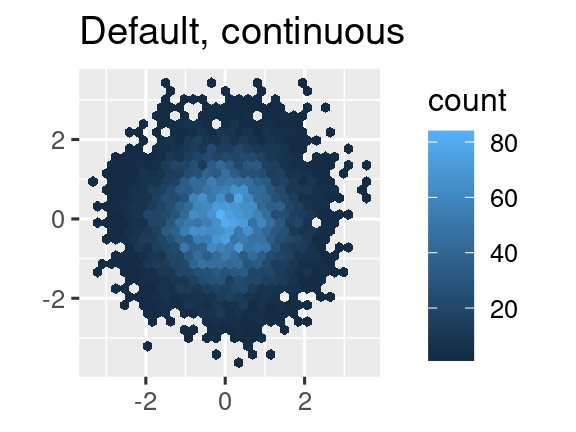
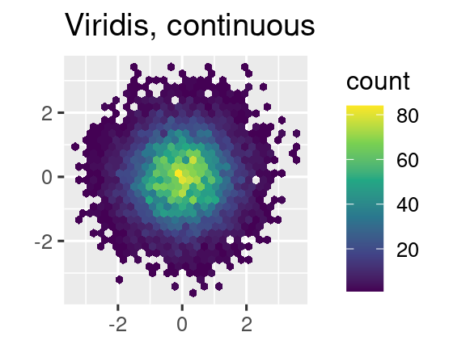
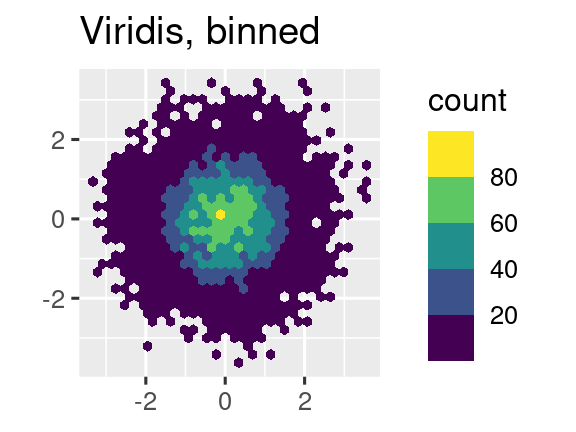
Παρατηρήστε ότι όλες οι χρωματικές κλίμακες διατίθενται σε δύο ποικιλίες: scale_color_*() και scale_fill_*() για τα αισθητικά στοιχεία color και fill αντίστοιχα (οι κλίμακες χρώματος είναι διαθέσιμες ακολουθώντας τον τρόπο γραφής τόσο του Ηνωμένου Βασιλείου όσο και των ΗΠΑ).
11.4.5 Εστιάζοντας
Υπάρχουν τρεις τρόποι για να ελέγξετε τα όρια του διαγράμματος:
- Προσαρμογή των δεδομένων που σχεδιάζονται.
- Ρύθμιση των ορίων σε κάθε κλίμακα.
- Ρύθμιση των
xlimκαιylimστη συνάρτησηcoord_cartesian().
Θα δείξουμε αυτές τις επιλογές σε μία σειρά διαγραμμάτων. Το διάγραμμα στα αριστερά δείχνει τη σχέση μεταξύ του μεγέθους του κινητήρα και της απόδοσης καυσίμου, χρωματισμένη ανά τύπο συστήματος μετάδοσης κίνησης. Το διάγραμμα στα δεξιά δείχνει τις ίδιες μεταβλητές, αλλά αναπαριστώντας υποσύνολα των δεδομένα. Η υποομάδα των δεδομένων έχει επηρεάσει τις κλίμακες x και y καθώς και την ομαλή καμπύλη.
# Αριστερά
ggplot(mpg, aes(x = displ, y = hwy)) +
geom_point(aes(color = drv)) +
geom_smooth()
# Δεξιά
mpg |>
filter(displ >= 5 & displ <= 6 & hwy >= 10 & hwy <= 25) |>
ggplot(aes(x = displ, y = hwy)) +
geom_point(aes(color = drv)) +
geom_smooth()

Ας τα συγκρίνουμε με τα δύο παρακάτω διαγράμματα όπου το διάγραμμα στα αριστερά θέτει τα limits σε μεμονωμένες κλίμακες και το διάγραμμα στα δεξιά τα ορίζει μέσω της coord_cartesian(). Μπορούμε να δούμε ότι η μείωση των ορίων ισοδυναμεί με δημιουργία υποσυνόλων των δεδομένων. Επομένως, για να εστιάσετε σε μία περιοχή της γραφικής παράστασης, είναι γενικά καλύτερο να χρησιμοποιήσετε το coord_cartesian().
# Αριστερά
ggplot(mpg, aes(x = displ, y = hwy)) +
geom_point(aes(color = drv)) +
geom_smooth() +
scale_x_continuous(limits = c(5, 6)) +
scale_y_continuous(limits = c(10, 25))
# Δεξιά
ggplot(mpg, aes(x = displ, y = hwy)) +
geom_point(aes(color = drv)) +
geom_smooth() +
coord_cartesian(xlim = c(5, 6), ylim = c(10, 25))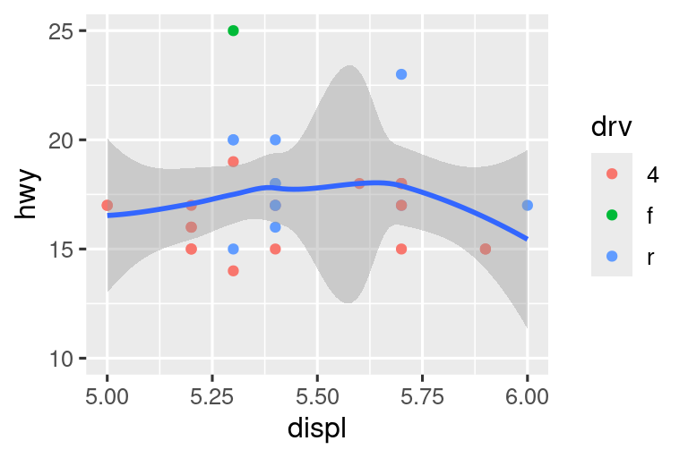
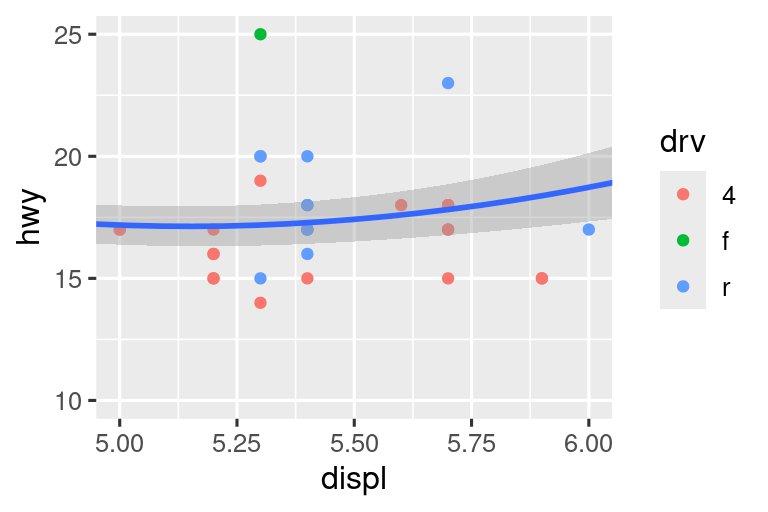
Από την άλλη, ο ορισμός των limits σε μεμονωμένες κλίμακες είναι γενικά πιο χρήσιμος εάν θέλετε να επεκτείνετε τα όρια, π.χ. ώστε να ταιριάξετε τις κλίμακες που χρησιμοποιούνται σε διαφορετικά διαγράμματα. Για παράδειγμα, αν εξαγάγουμε δύο κατηγορίες αυτοκινήτων και τις αναπαραστήσουμε χωριστά, είναι δύσκολο να συγκρίνουμε τα διαγράμματα επειδή και οι τρεις κλίμακες (ο άξονας x, ο άξονας y και το χρωματικό αισθητικό στοιχείο) έχουν διαφορετικά εύρη.
suv <- mpg |> filter(class == "suv")
compact <- mpg |> filter(class == "compact")
# Αριστερά
ggplot(suv, aes(x = displ, y = hwy, color = drv)) +
geom_point()
# Δεξιά
ggplot(compact, aes(x = displ, y = hwy, color = drv)) +
geom_point()![Στα αριστερά, ένα διάγραμμα διασποράς των χιλιομέτρων σε αυτοκινητόδρομο έναντι της μετατόπισης των SUV. Στα δεξιά, ένα διάγραμμα διασποράς των ίδιων μεταβλητών για συμπαγή αυτοκίνητα. Τα σημεία χρωματίζονται ανά τύπο κίνησης και για τα δύο διαγράμματα. Μεταξύ των SUV, τα περισσότερα από τα αυτοκίνητα είναι τετρακίνητα και τα άλλα είναι πισωκίνητα, ενώ μεταξύ των συμπαγών αυτοκινήτων τα περισσότερα από τα αυτοκίνητα είναι προσθιοκίνητα και τα άλλα είναι τετρακίνητα. Το διάγραμμα των SUV δείχνει μια σαφή αρνητική σχέση μεταξύ της χιλιομετρικής απόστασης και του κυβισμού, ενώ στην γραφική παράσταση των συμπαγών αυτοκινήτων η σχέση είναι πολύ πιο επίπεδη.](communication_files/figure-html/unnamed-chunk-30-1.png)
![Στα αριστερά, ένα διάγραμμα διασποράς των χιλιομέτρων σε αυτοκινητόδρομο έναντι της μετατόπισης των SUV. Στα δεξιά, ένα διάγραμμα διασποράς των ίδιων μεταβλητών για συμπαγή αυτοκίνητα. Τα σημεία χρωματίζονται ανά τύπο κίνησης και για τα δύο διαγράμματα. Μεταξύ των SUV, τα περισσότερα από τα αυτοκίνητα είναι τετρακίνητα και τα άλλα είναι πισωκίνητα, ενώ μεταξύ των συμπαγών αυτοκινήτων τα περισσότερα από τα αυτοκίνητα είναι προσθιοκίνητα και τα άλλα είναι τετρακίνητα. Το διάγραμμα των SUV δείχνει μια σαφή αρνητική σχέση μεταξύ της χιλιομετρικής απόστασης και του κυβισμού, ενώ στην γραφική παράσταση των συμπαγών αυτοκινήτων η σχέση είναι πολύ πιο επίπεδη.](communication_files/figure-html/unnamed-chunk-30-2.png)
Ένας τρόπος για να ξεπεραστεί αυτό το πρόβλημα είναι να μοιράζεστε κλίμακες σε πολλαπλά διαγράμματα, εκπαιδεύοντας τις κλίμακες με τις τιμές των limits που αντιστοιχούν στα πλήρη δεδομένα.
x_scale <- scale_x_continuous(limits = range(mpg$displ))
y_scale <- scale_y_continuous(limits = range(mpg$hwy))
col_scale <- scale_color_discrete(limits = unique(mpg$drv))
# Αριστερά
ggplot(suv, aes(x = displ, y = hwy, color = drv)) +
geom_point() +
x_scale +
y_scale +
col_scale
# Δεξιά
ggplot(compact, aes(x = displ, y = hwy, color = drv)) +
geom_point() +
x_scale +
y_scale +
col_scale![Στα αριστερά, ένα διάγραμμα διασποράς των χιλιομέτρων σε αυτοκινητόδρομο έναντι της μετατόπισης των SUV. Στα δεξιά, ένα διάγραμμα διασποράς των ίδιων μεταβλητών για συμπαγή αυτοκίνητα. Τα σημεία χρωματίζονται ανά τύπο κίνησης και για τα δύο διαγάμματα. Και τα δύο διαγράμματα σχεδιάζονται στην ίδια κλίμακα για τη χιλιομετρική απόσταση σε αυτοκινητόδρομο, την μετατόπιση και τον τύπο κίνησης, με αποτέλεσμα η λεζάντα να δείχνει και τους τρεις τύπους (front, rear, and 4-wheel drive) και για τα δύο διαγράμματα, παρόλο που δεν υπάρχουν SUV με κίνηση στους μπροστινούς τροχούς, αλλά ούτε και συμπαγή αυτοκίνητα με κίνηση στους πίσω τροχούς. Δεδομένου ότι οι κλίμακες x και y είναι ίδιες και ξεπερνούν πολύ την ελάχιστη ή τη μέγιστη χιλιομετρική απόσταση και μετατόπιση σε αυτοκινητόδρομο, τα σημεία δεν καταλαμβάνουν ολόκληρη την περιοχή σχεδίασης.](communication_files/figure-html/unnamed-chunk-31-1.png)
![Στα αριστερά, ένα διάγραμμα διασποράς των χιλιομέτρων σε αυτοκινητόδρομο έναντι της μετατόπισης των SUV. Στα δεξιά, ένα διάγραμμα διασποράς των ίδιων μεταβλητών για συμπαγή αυτοκίνητα. Τα σημεία χρωματίζονται ανά τύπο κίνησης και για τα δύο διαγάμματα. Και τα δύο διαγράμματα σχεδιάζονται στην ίδια κλίμακα για τη χιλιομετρική απόσταση σε αυτοκινητόδρομο, την μετατόπιση και τον τύπο κίνησης, με αποτέλεσμα η λεζάντα να δείχνει και τους τρεις τύπους (front, rear, and 4-wheel drive) και για τα δύο διαγράμματα, παρόλο που δεν υπάρχουν SUV με κίνηση στους μπροστινούς τροχούς, αλλά ούτε και συμπαγή αυτοκίνητα με κίνηση στους πίσω τροχούς. Δεδομένου ότι οι κλίμακες x και y είναι ίδιες και ξεπερνούν πολύ την ελάχιστη ή τη μέγιστη χιλιομετρική απόσταση και μετατόπιση σε αυτοκινητόδρομο, τα σημεία δεν καταλαμβάνουν ολόκληρη την περιοχή σχεδίασης.](communication_files/figure-html/unnamed-chunk-31-2.png)
Σε αυτή τη συγκεκριμένη περίπτωση, θα μπορούσατε απλώς να έχετε χρησιμοποιήσει όψεις (faceting), αλλά αυτή η τεχνική είναι χρήσιμη γενικότερα, εάν, για παράδειγμα, θέλετε να κατανείμετε γραφικά σε πολλές σελίδες μιας αναφοράς.
11.4.6 Ασκήσεις
-
Γιατί ο παρακάτω κώδικας δεν αντικαθιστά την προεπιλεγμένη κλίμακα;
df <- tibble( x = rnorm(10000), y = rnorm(10000) ) ggplot(df, aes(x, y)) + geom_hex() + scale_color_gradient(low = "white", high = "red") + coord_fixed() Ποιο είναι το πρώτο όρισμα σε κάθε κλίμακα; Πώς συγκρίνεται με τη συνάρτηση
labs();-
Αλλάξτε την εμφάνιση των προεδρικών θητειών:
- Συνδυάζοντας τις δύο παραλλαγές που προσαρμόζουν τα χρώματα και τα διαχωριστικά του άξονα x.
- Βελτιώνοντας την εμφάνισης του άξονα y.
- Επισημαίνοντας κάθε θητεία με το όνομα του προέδρου.
- Προσθέτοντας ενημερωτικές ετικέτες.
- Τοποθετώντας τα διαχωριστικά κάθε 4 χρόνια (αυτό είναι πιο δύσκολο από όσο φαίνεται!).
-
Αρχικά, δημιουργήστε το ακόλουθο διάγραμμα. Στη συνέχεια, τροποποιήστε τον κώδικα χρησιμοποιώντας το όρισμα
override.aesγια να κάνετε το υπόμνημα πιο ευδιάκριτο.ggplot(diamonds, aes(x = carat, y = price)) + geom_point(aes(color = cut), alpha = 1/20)
11.5 Θέματα
Τέλος, μπορείτε να εξατομικεύσετε τα στοιχεία του διαγράμματος που δεν σχετίζονται με τα δεδομένα χρησιμοποιώντας ένα θέμα:
ggplot(mpg, aes(x = displ, y = hwy)) +
geom_point(aes(color = class)) +
geom_smooth(se = FALSE) +
theme_bw()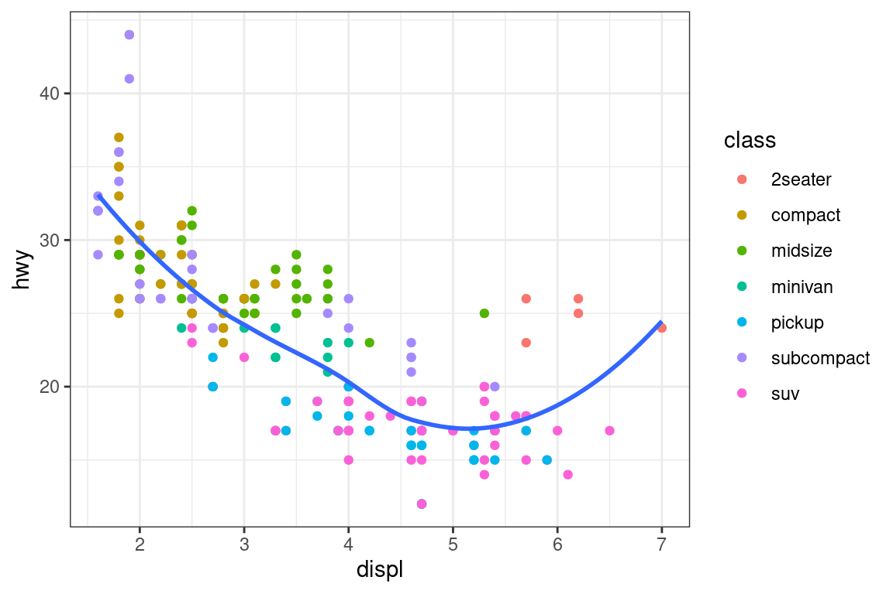
Η ggplot2 περιλαμβάνει τα οκτώ θέματα που εμφανίζονται στο Σχήμα 11.2, με το theme_gray() ως προεπιλογή.2 Πολλά άλλα περιλαμβάνονται σε πακέτα πρόσθετων όπως το ggthemes (https://jrnold.github.io/ggthemes), του Jeffrey Arnold. Μπορείτε επίσης να δημιουργήσετε τα δικά σας θέματα, εάν προσπαθείτε να ακολουθήσετε ένα συγκεκριμένο εταιρικό στυλ ή στυλ που συναντάται σε κάποιο επιστημονικό περιοδικό.

Είναι επίσης δυνατός ο έλεγχος μεμονωμένων στοιχείων κάθε θέματος, όπως το μέγεθος και το χρώμα της γραμματοσειράς που χρησιμοποιείται για τον άξονα y. Έχουμε ήδη δει ότι το legend.position ελέγχει πού τοποθετείται το υπόμνημα. Υπάρχουν πολλές άλλες πτυχές του υπομνήματος που μπορούν να προσαρμοστούν με τη συνάρτηση theme(). Για παράδειγμα, στο παρακάτω διάγραμμα αλλάζουμε την κατεύθυνση του υπομνήματος, ενώ τοποθετούμε και ένα μαύρο περίγραμμα γύρω του. Σημειώστε ότι η προσαρμογή του πλαισίου υπομνήματος και των στοιχείων τίτλου πλοκής του θέματος γίνεται με τις συναρτήσεις element_*(). Αυτές οι συναρτήσεις καθορίζουν το στυλ των στοιχείων που είναι ανεξάρτητα των δεδομένων, για παράδειγμα το κείμενο του τίτλου είναι με έντονη γραφή στο όρισμα face της element_text() και το χρώμα του περιγράμματος του υπομνήματος ορίζεται στο όρισμα color της element_rect(). Τα στοιχεία του θέματος που ελέγχουν τη θέση του τίτλου και της λεζάντας είναι τα plot.title.position και plot.caption.position, αντίστοιχα. Στο ακόλουθο διάγραμμα, αυτά ορίζονται σε "plot" για να υποδείξουν ότι αυτά τα στοιχεία είναι ευθυγραμμισμένα σε ολόκληρη την περιοχή της γραφικής παράστασης, αντί με το πλαίσιο γραφικής παράστασης (η προεπιλογή). Μερικά άλλα χρήσιμα στοιχεία της theme() χρησιμοποιούνται για την αλλαγή της τοποθέτησης για τη μορφή του κειμένου του τίτλου και της λεζάντας.
ggplot(mpg, aes(x = displ, y = hwy, color = drv)) +
geom_point() +
labs(
title = "Larger engine sizes tend to have lower fuel economy",
caption = "Source: https://fueleconomy.gov."
) +
theme(
legend.position = c(0.6, 0.7),
legend.direction = "horizontal",
legend.box.background = element_rect(color = "black"),
plot.title = element_text(face = "bold"),
plot.title.position = "plot",
plot.caption.position = "plot",
plot.caption = element_text(hjust = 0)
)
#> Warning: A numeric `legend.position` argument in `theme()` was deprecated in ggplot2
#> 3.5.0.
#> ℹ Please use the `legend.position.inside` argument of `theme()` instead.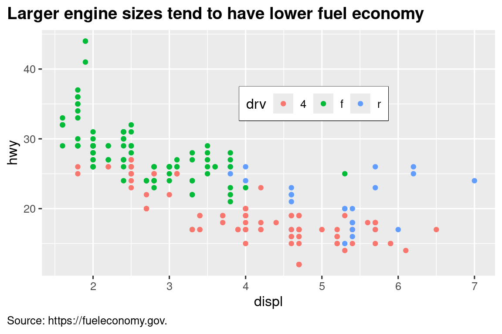
Για μία επισκόπηση όλων των στοιχείων της theme(), ανατρέξτε στη βοήθεια με το ?theme. Το σχετικό βιβλίο της ggplot2 είναι επίσης ένα εξαιρετικό μέρος που μπορείτε να επισκεφθείτε για τις πλήρεις λεπτομέρειες σχετικά με το θέμα.
11.5.1 Ασκήσεις
- Επιλέξτε ένα θέμα που προσφέρεται από το πακέτο ggthemes και εφαρμόστε το στο τελευταίο διάγραμμα που δημιουργήσατε.
- Κάντε τις ετικέτες των αξόνων του διαγράμματος σας μπλε και έντονες.
11.6 Διάταξη
Μέχρι στιγμής μιλήσαμε για το πώς να δημιουργήσουμε και να τροποποιήσουμε ένα ενιαίο διάγραμμα Τι γίνεται αν έχετε πολλά διαγράμματα που θέλετε να διατάξετε με συγκεκριμένο τρόπο; Το πακέτο patchwork σας επιτρέπει να συνδυάσετε ξεχωριστά διαγράμματα στο ίδιο γραφικό. Φορτώσαμε αυτό το πακέτο νωρίτερα στο κεφάλαιο.
Για να τοποθετήσετε δύο διαγράμματα το ένα δίπλα στο άλλο, μπορείτε απλά να τα προσθέσετε το ένα στο άλλο. Σημειώστε ότι πρέπει πρώτα να δημιουργήσετε τις γραφικές παραστάσεις και να τις αποθηκεύσετε ως αντικείμενα (στο παρακάτω παράδειγμα ονομάζονται p1 και p2). Στη συνέχεια, τα τοποθετείτε το ένα δίπλα στο άλλο με το +.
p1 <- ggplot(mpg, aes(x = displ, y = hwy)) +
geom_point() +
labs(title = "Plot 1")
p2 <- ggplot(mpg, aes(x = drv, y = hwy)) +
geom_boxplot() +
labs(title = "Plot 2")
p1 + p2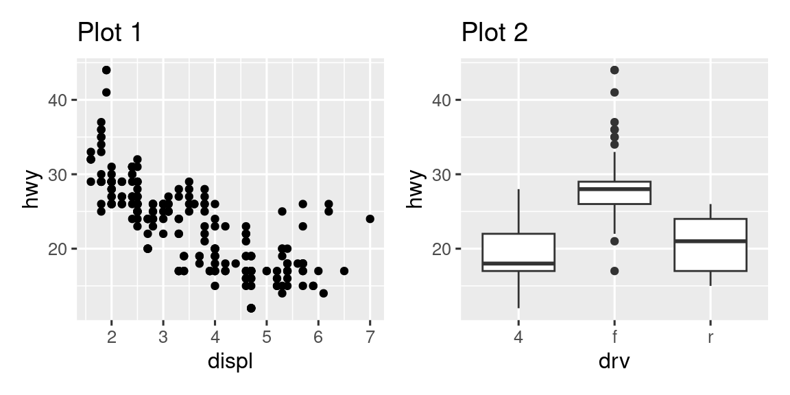
Είναι σημαντικό να σημειωθεί ότι στο παραπάνω κομμάτι κώδικα δεν χρησιμοποιήσαμε κάποια νέα συνάρτηση από το πακέτο patchwork Αντίθετα, το πακέτο πρόσθεσε μία νέα λειτουργικότητα στον τελεστή +.
Μπορείτε επίσης να δημιουργήσετε σύνθετες διατάξεις διαγραμμάτων με το patchwork. Παρακάτω, το | τοποθετεί το p1 και το p3 το ένα δίπλα στο άλλο και το / μετακινεί το p2 στην επόμενη γραμμή.
p3 <- ggplot(mpg, aes(x = cty, y = hwy)) +
geom_point() +
labs(title = "Plot 3")
(p1 | p3) / p2![Τρία διαγράμματα διαρρυθμισμένα έτσι ώστε το πρώτο και το τρίτο διάγραμμα να είναι το ένα δίπλα στο άλλο και το δεύτερο διάγραμμα να εκτείνεται κάτω από αυτά. Το πρώτο διάγραμμα είναι ένα διάγραμμα διασποράς της χιλιομετρικής απόστασης σε αυτοκινητόδρομο σε σχέση με το μέγεθος του κινητήρα, το τρίτο διάγραμμα είναι ένα διάγραμμα διασποράς των χιλιομέτρων αυτοκινητόδρομου σε σχέση με τα χιλιόμετρα της πόλης και το τρίτο διάγραμμα είναι διάγραμμα των διανυθέντων χιλιομέτρων σε αυτοκινητόδρομο σε σχέση με το σύστημα κίνησης) τοποθετημένα το ένα δίπλα στο άλλο.](communication_files/figure-html/unnamed-chunk-38-1.png)
Επιπλέον, το patchwork σας επιτρέπει να συλλέγετε υπομνήματα από πολλά διαγράμματα σε ένα κοινό υπόμνημα, να προσαρμόζετε την τοποθέτηση του υπομνήματος καθώς και τις διαστάσεις των διαγραμμάτων και να προσθέτετε έναν κοινό τίτλο, υπότιτλο, λεζάντα κ.λπ. στα διαγράμματα σας. Παρακάτω δημιουργούμε 5 διαγράμματα Απενεργοποιήσαμε τα υπομνήματα στα θηκογράμματα και στο διάγραμμα διασποράς και συλλέξαμε τα υπομνήματα για τα διαγράμματα πυκνότητας στην κορυφή του διαγράμματος με το & theme(legend.position = «κορυφή»). Παρατηρήστε ότι εδώ χρησιμοποιούμε τον τελεστή & αντί του συνηθισμένου +. Αυτό συμβαίνει επειδή τροποποιούμε το θέμα για το patchwork διάγραμμα σε αντίθεση με τα μεμονωμένα ggplots. Το υπόμνημα τοποθετείται στην κορυφή, μέσα στη guide_area(). Τέλος, έχουμε επίσης προσαρμόσει τα ύψη των διαφόρων εξαρτημάτων του patchwork μας – ο οδηγός έχει ύψος 1, τα θηκογράμματα ύψος 3, τα γραφήματα πυκνότητας 2 και το πολύπλευρο διάγραμμα διασποράς 4. Το patchwork διαιρεί την περιοχή που έχετε παραχωρήσει για το διάγραμμα σας χρησιμοποιώντας αυτήν την κλίμακα και τοποθετεί κάθε εξάρτημα ανάλογα.
p1 <- ggplot(mpg, aes(x = drv, y = cty, color = drv)) +
geom_boxplot(show.legend = FALSE) +
labs(title = "Plot 1")
p2 <- ggplot(mpg, aes(x = drv, y = hwy, color = drv)) +
geom_boxplot(show.legend = FALSE) +
labs(title = "Plot 2")
p3 <- ggplot(mpg, aes(x = cty, color = drv, fill = drv)) +
geom_density(alpha = 0.5) +
labs(title = "Plot 3")
p4 <- ggplot(mpg, aes(x = hwy, color = drv, fill = drv)) +
geom_density(alpha = 0.5) +
labs(title = "Plot 4")
p5 <- ggplot(mpg, aes(x = cty, y = hwy, color = drv)) +
geom_point(show.legend = FALSE) +
facet_wrap(~drv) +
labs(title = "Plot 5")
(guide_area() / (p1 + p2) / (p3 + p4) / p5) +
plot_annotation(
title = "City and highway mileage for cars with different drive trains",
caption = "Source: https://fueleconomy.gov."
) +
plot_layout(
guides = "collect",
heights = c(1, 3, 2, 4)
) &
theme(legend.position = "top")![Πέντε διαγράμματα διαρρυθμισμένα έτσι ώστε τα δύο πρώτα διαγράμματα να είναι το ένα δίπλα στο άλλο. Τα διαγράμματα τρία και τέσσερα είναι από κάτω τους. Και το πέμπτο διάγραμμα απλώνεται από κάτω τους. Το ενωμένο διάγραμμα με έχει τίτλο "City and highway mileage for cars with different drive trains" και λεζάντα "Source: https://fueleconomy.gov". Τα δύο πρώτα διαγράμματα είναι θηκογράμματα, το ένα δίπλα στο άλλο. Τα διαγράμματα 3 και 4 είναι διαγράμματα πυκνότητας. Και το πέμπτο διάγραμμα είναι ένα πολύπλευρο διάγραμμα διασποράς. Κάθε ένα από αυτά τα διαγράμματα εμφανίζει γεωμετρικά στοιχεία χρωματισμένα σύμφωνα με το σύστημα μετάδοσης κίνησης, αλλά το διάγραμμα έχει μόνο ένα υπόμνημα που ισχύει για όλα αυτά, πάνω από τα διαγράμματα και κάτω από τον τίτλο.](communication_files/figure-html/unnamed-chunk-39-1.png)
Εάν θέλετε να μάθετε περισσότερα σχετικά με το συνδυασμό και τη διάταξη πολλαπλών γραφικών με το patchwork, συνιστούμε να ανατρέξετε στους οδηγούς στον ιστότοπο του πακέτου: https://patchwork.data-imaginist.com.
11.6.1 Ασκήσεις
-
Τι θα συμβεί αν παραλείψετε τις παρενθέσεις στην παρακάτω διάταξη διαγράμματος. Μπορείτε να εξηγήσετε γιατί συμβαίνει αυτό;
p1 <- ggplot(mpg, aes(x = displ, y = hwy)) + geom_point() + labs(title = "Plot 1") p2 <- ggplot(mpg, aes(x = drv, y = hwy)) + geom_boxplot() + labs(title = "Plot 2") p3 <- ggplot(mpg, aes(x = cty, y = hwy)) + geom_point() + labs(title = "Plot 3") (p1 | p2) / p3 -
Χρησιμοποιώντας τα τρία διαγράμματα από την προηγούμενη άσκηση, δημιουργήστε ξανά το παρακάτω συνονθύλευμα (patchwork).
![Τρία διαγράμματα: Το διάγραμμα 1 είναι ένα διάγραμμα διασποράς της χιλιομετρικής απόστασης σε αυτοκινητόδρομο, σε σχέση με το μέγεθος του κινητήρα. Το διάγραμμα 2 αποτελείται από παράπλευρα θηκογράμματα των χιλιομέτρων σε αυτοκινητόδρομο, έναντι του συστήματος κίνησης. Το διάγραμμα 3 αποτελείται από παράπλευρα θηκογράμματα των χιλιομέτρων πόλης, έναντι του συστήματος κίνησης. Το διάγραμμα 1 βρίσκεται στην πρώτη γραμμή. Τα διαγράμματα 2 και 3 βρίσκονται στην επόμενη γραμμή, και το καθένα εκτείνεται στο μισό του πλάτους του διαγράμματος 1. Το διάγραμμα 1 φέρει την ετικέτα "Fig. A", το οικόπεδο 2 φέρει την ετικέτα "Fig. B" και το οικόπεδο 3 φέρει την ετικέτα "Fig. C".](communication_files/figure-html/unnamed-chunk-41-1.png)
11.7 Σύνοψη
Σε αυτό το κεφάλαιο μάθατε για την προσθήκη ετικετών στα διαγράμματα, όπως για παράδειγμα τίτλο, υπότιτλο, λεζάντα, καθώς και την τροποποίηση προεπιλεγμένων ετικετών αξόνων, τη χρήση σχολιασμού για την προσθήκη ενημερωτικού κειμένου στο διάγραμμα σας ή την επισήμανση συγκεκριμένων σημείων δεδομένων, την προσαρμογή των κλιμάκων του άξονα και την αλλαγή του θέματος της πλοκής σας. Έχετε μάθει επίσης πώς να συνδυάζετε πολλαπλά διαγράμματα σε ένα μόνο γράφημα χρησιμοποιώντας απλές και σύνθετες διατάξεις γραφικών παραστάσεων.
Ενώ μέχρι στιγμής έχετε μάθει πώς να δημιουργείτε πολλούς διαφορετικούς τύπους διαγραμμάτων και πώς να τα προσαρμόζετε χρησιμοποιώντας μία ποικιλία τεχνικών, μόλις έχουμε γρατσουνίσει την επιφάνεια του τι μπορείτε να δημιουργήσετε με το πακέτο ggplot2. Εάν θέλετε να κατανοήσετε πλήρως το ggplot2, συνιστούμε να διαβάσετε το βιβλίο, ggplot2: Elegant Graphics for Data Analysis. Άλλες χρήσιμες πηγές είναι το R Graphics Cookbook του Winston Chang και το Fundamentals of Data Visualization του Claus Wilke .
Μπορείτε να χρησιμοποιήσετε ένα εργαλείο όπως το SimDaltonism για να προσομοιώσετε την αχρωματοψία και να το δοκιμάσετε σε αυτές τις εικόνες.↩︎
Πολλοί αναρωτιούνται γιατί το προεπιλεγμένο θέμα έχει γκρι φόντο. Αυτή ήταν μία σκόπιμη επιλογή γιατί προβάλλει τα δεδομένα ενώ παράλληλα κάνει ορατές τις γραμμές πλέγματος. Οι λευκές γραμμές πλέγματος είναι ορατές (κάτι που είναι σημαντικό γιατί βοηθούν σημαντικά να διακρίνουμε τη θέση), αλλά έχουν μικρό οπτικό αντίκτυπο και μπορούμε εύκολα να τις εξαφανίσουμε. Το γκρι φόντο δίνει στην πλοκή παρόμοιο τυπογραφικό χρώμα με το κείμενο, διασφαλίζοντας ότι τα γραφικά ταιριάζουν με τη ροή ενός εγγράφου χωρίς να ξεχωρίζουν έντονα με φωτεινό λευκό φόντο. Τέλος, το γκρι φόντο δημιουργεί ένα συνεχές χρωματικό πεδίο που διασφαλίζει ότι το διάγραμμα γίνεται αντιληπτό ως μία ενιαία οπτική οντότητα.↩︎